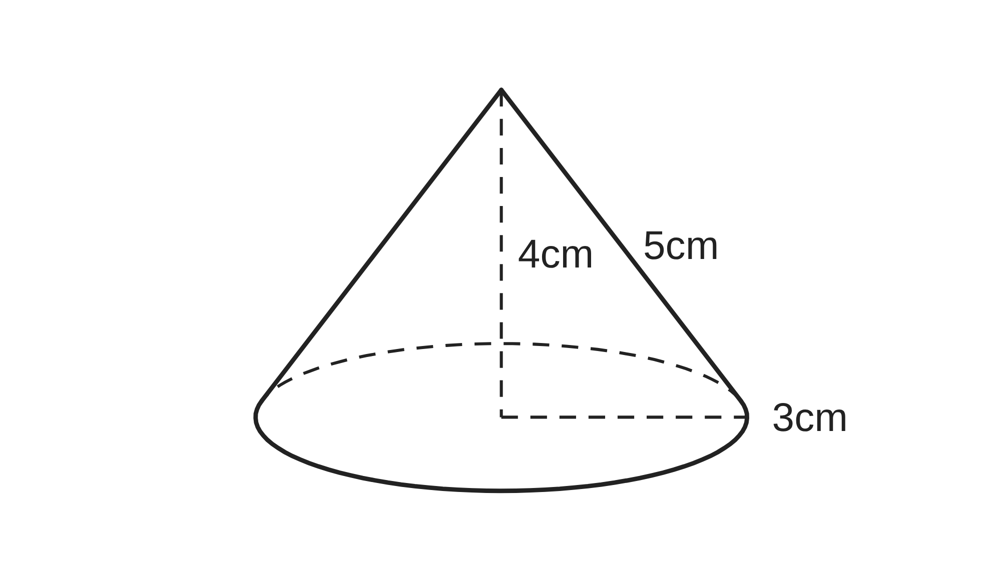
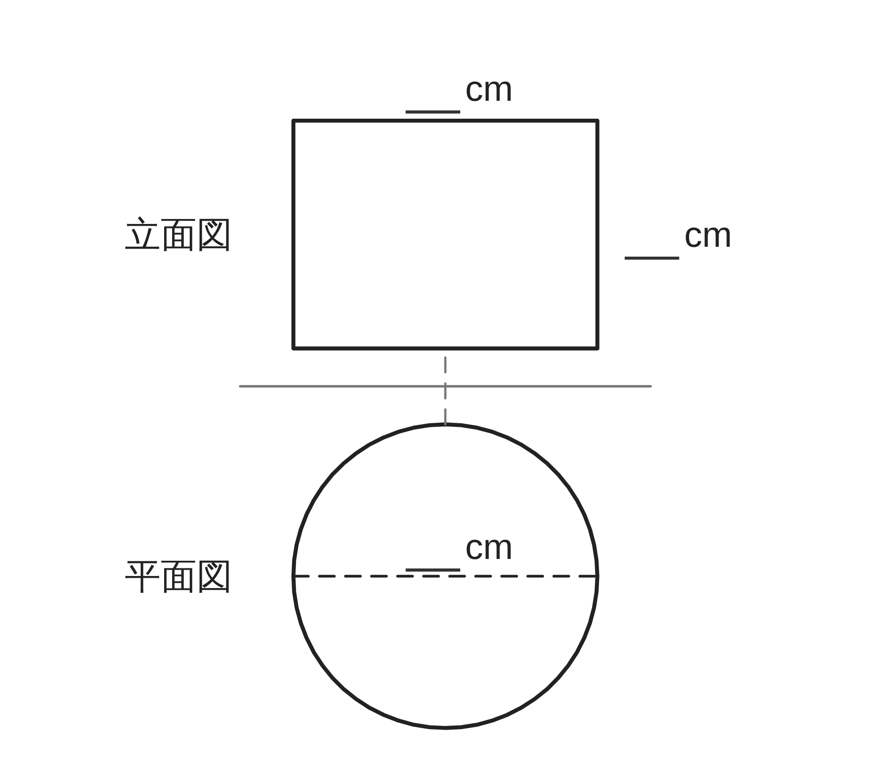
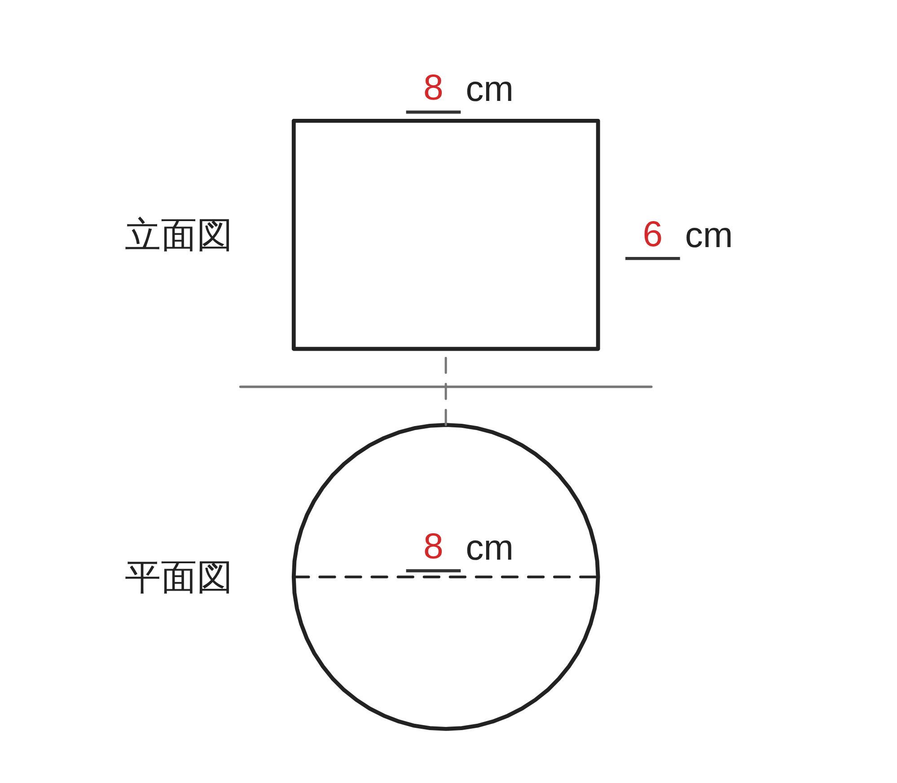
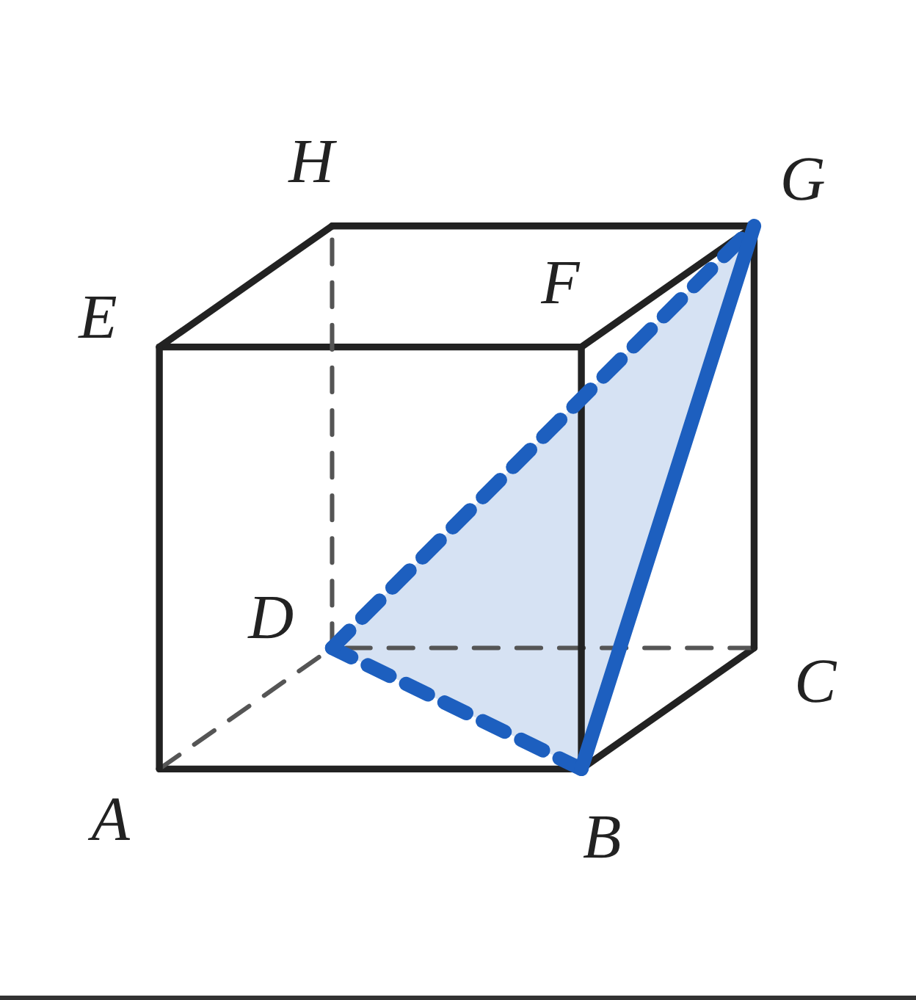

ペア学習
第15時 空間図形で学んだことを、整理して確かめよう
第14時「身のまわりのものを立体とみなして、量を見積もろう」の言葉。
1人1問ずつ出題して、言葉の意味を、自分の言葉で言う。
みなす
モデル
見積もる
およそ
大きめ・小さめ
円柱・円錐・球
L と cm³
空間図形 第15時 空間図形で学んだことを、整理して確かめよう
めあて
第15時 空間図形で学んだことを、整理して確かめよう
学習課題
図の円錐（底面の半径 3cm、高さ 4cm、母線 5cm）を、
4つの見方でとらえて、わかることを書こう。

① 動かす … どんな図形を、どの直線を軸に回転させた立体か
② 方向を決めて見る … 立面図と平面図の形
③ 切り開く … 展開図で、側面はどんな図形か
④ 面で分ける … 底面に平行な平面で切ったときの、切り口
空間図形 第15時 空間図形で学んだことを、整理して確かめよう
学習課題のまとめ
第15時 空間図形で学んだことを、整理して確かめよう
円錐を、4つの見方でとらえて、わかることを書こう。
① 動かす
直角三角形を、高さの辺を軸に回転させた立体
② 方向を決めて見る
立面図は二等辺三角形、平面図は円
③ 切り開く
おうぎ形（弧の長さは、底面の円周 6π cm）
④ 面で分ける
円
空間図形 第15時 空間図形で学んだことを、整理して確かめよう
ことば
第15時 空間図形で学んだことを、整理して確かめよう
2直線の位置関係 … 交わる・平行・
平面図形を、1つの直線を軸として1回転させて
できる立体を という。
立体を正面から見た図を 、真上から見た図を といい、
2つあわせて という。
立体の表面を切り開いて、平面に広げた図を という。
角柱・円柱 V＝ 角錐・円錐 V＝
（S：底面積 h：高さ）
球 S＝ V＝
空間図形 第15時 空間図形で学んだことを、整理して確かめよう
ことば
第15時 空間図形で学んだことを、整理して確かめよう
2直線の位置関係 … 交わる・平行・ねじれの位置
平面図形を、1つの直線を軸として1回転させて
できる立体を回転体という。
立体を正面から見た図を立面図、真上から見た図を平面図といい、
2つあわせて投影図という。
立体の表面を切り開いて、平面に広げた図を展開図という。
角柱・円柱 V＝Sh 角錐・円錐 V＝1⁄3Sh
（S：底面積 h：高さ）
球 S＝4πr² V＝4⁄3πr³
空間図形 第15時 空間図形で学んだことを、整理して確かめよう
例題
第15時 空間図形で学んだことを、整理して確かめよう
右の投影図で表される立体について、答えよう。
立面図は、横 cm、たて cm の長方形。
平面図は、直径 cm の円。
（1）立体の名前 （2）表面積 （3）体積
（π のままで答える）

空間図形 第15時 空間図形で学んだことを、整理して確かめよう
例題 解答
第15時 空間図形で学んだことを、整理して確かめよう
（1）
円柱（底面の半径 4cm、高さ 6cm）
（2）
2π×4×6+π×4²×2＝48π+32π
＝80π（cm²）
（3）
π×4²×6＝96π（cm³）

空間図形 第15時 空間図形で学んだことを、整理して確かめよう
考えよう
第15時 空間図形で学んだことを、整理して確かめよう
立体のとらえ方（見方）
面で分ける
動かす
切り開く
方向を決めて見る
次のア〜エには、どの見方が役に立つだろう。見方を選んで、わけを説明しよう。
ア
立方体 ABCD-EFGH を、3つの頂点 B、D、G を通る平面で
切ったときの、切り口の形
イ
底面の半径 3cm、母線 5cm の円錐の、表面積
ウ
半径 3cm の半円を、直径を軸として1回転させて
できる立体の、体積
エ
どの向きから見ても、円に見える立体の、名前

①
ア〜エのうち 2つを選んで、その見方が役に立つわけを、説明しよう。
②
同じ問題を、ちがう見方でも考えられるだろうか。1つ例をあげよう。
空間図形 第15時 空間図形で学んだことを、整理して確かめよう
振り返り
第15時 空間図形で学んだことを、整理して確かめよう
今日のめあて
ねじれの位置
回転体
立面図・平面図
投影図
展開図
柱体・錐体・球の公式
今日わかったことを、ペアで1つずつ言い合おう。
ワークシートと演習プリントを出そう。（未完成でも出す）
空間図形 第15時 空間図形で学んだことを、整理して確かめよう